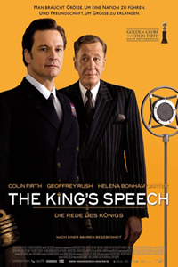
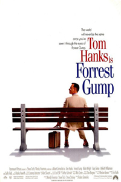

奥斯卡最佳影片选 第91届获奖作品。该片改编自真人真事，讲述了保镖托尼被聘用为世界上优秀的爵士钢琴家唐开车。钢琴家将从纽约开始举办巡回演奏，俩人之间一段跨越种族、阶级的友谊的故事。 第89届获奖作品。该片讲述了喀戎从孩童到青年时期，逐步发现自己的性取向，经受外界非议和内心挣扎后，找到真正自我的故事。2017年2月26日，该片获得第89届奥斯卡金像奖最佳影片奖。 第87届获奖作品。影片讲述一个过气的超级英雄演员，企图借百老汇咸鱼翻身的故事。  第83届获奖作品。影片讲述了1936年英王乔治五世逝世，王位留给了患严重口吃的艾伯特王子，后在语言治疗师莱纳尔·罗格的治疗下，克服障碍，在二战前发表鼓舞人心的演讲。 第74届获奖作品。该片讲述了患有精神分裂症的数学家约翰·福布斯·纳什，在博弈论和微分几何学领域潜心研究，最终获得诺贝尔经济学奖的故事。 第71届获奖作品。影片以莎士比亚创作《罗密欧与朱丽叶》为引线，讲述了一代文豪莎士比亚的的人物轶事及其浪漫的爱情史，并点出其创作《罗密欧与朱丽叶》的主因及过程。 第70届获奖作品。影片以1912年泰坦尼克号沉没的事件为背景，讲述了处于不同阶层的两个人穷画家杰克和贵族女露丝抛弃世俗的偏见坠入爱河，最终杰克把生命的机会让给了露丝的感人故事。  第67届获奖作品。电影改编自美国作家温斯顿·格卢姆于1986年出版的同名小说，描绘了先天智障的小镇男孩福瑞斯特·甘自强不息，最终“傻人有傻福”地得到上天眷顾，在多个领域创造奇迹的励志故事。 第66届获奖作品。该片改编自澳大利亚小说家托马斯·肯尼利的同名小说，讲述了一名身在波兰的的德国人辛德勒，在二战时雇用了1100多名犹太人在他的工厂工作，帮助他们逃过被屠杀的劫数。 第64届获奖作品。该片讲述了实习特工克拉丽斯为了追寻杀人狂野牛比尔的线索，前往一监狱访问精神病专家汉尼拔博士，汉尼拔给克拉丽斯提供了线索，最终克拉丽斯找到了野牛比尔，并将其击毙。 第60届获奖作品。该片讲述了中国最后一个皇帝爱新觉罗·溥仪从当上皇帝开始到最终成为一名普通公民之间横跨60年的跌宕一生。1988年，该片获得第60届奥斯卡金像奖最佳影片的奖项。 第45届获奖作品。该片改编自马里奥·普佐的同名小说，讲述了以维托·唐·柯里昂为首的黑帮家族的发展过程以及柯里昂的小儿子迈克如何接任父亲成为黑帮首领的故事。改片2007年被美国电影协会选为“百年百佳影片第二位”。 第43届获奖作品。影片主要介绍了1943年在北非，英美盟军遭到绰号叫“沙漠之狐”隆美尔元帅率领的德军反击，展开了一场大规模的战斗，结果美军遭到惨败陷入了困境的故事。 第42届获奖作品。该片讲述了穷困潦倒的乔是如何在纽约生活，以及发生在乔与里佐之间的故事。1969年5月25日，该片在美国上映，并成为美国第一部实行X级分级制的影片。 第37届获奖作品。《窈窕淑女》是华纳兄弟影业于1964年出品的歌舞片该片改编自萧伯纳的戏剧剧作《卖花女》，讲述下层阶级的卖花女被中产阶层语言学教授改造成优雅贵妇的故事。 第32届获奖作品。《宾虚》是米高梅电影公司出品，是由导演威廉·惠勒执导的民族苦难历史片。该片改编自卢·华莱士的同名长篇小说。讲述了犹太人宾虚同罗马指挥官玛瑟拉之间的爱恨情仇及其反抗罗马帝国压迫故事。 第29届获奖作品。该片讲述了英国贵族福克经历一场惊险刺激、遭遇千奇百怪的环球旅程。 第14届获奖作品。该片改编自英国小说家李察·勒埃林的同名小说，讲述了工人运动使得摩根家中的两代人发生矛盾的故事。 第12届获奖作品。影片以美国南北战争为背景，讲述了主人公斯嘉丽与白瑞德之间一段跌宕起伏的爱情故事。 第7届获奖作品。该片讲述了一个逃出家门的富家女和一个报纸记者之间的爱情故事。